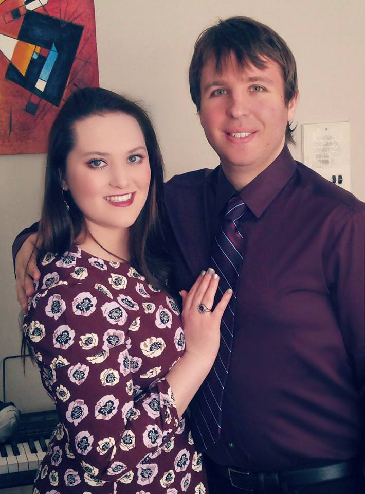
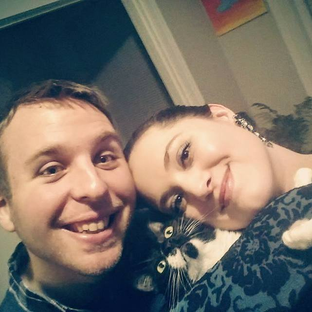

Blocked Hotel Choices
While there are many hotel options you may search for in La Jolla and San Diego that may suit your needs differently and offer different prices, these 2 hotels are walking distance from our venue and offer the most convenience. The area of La Jolla is extremely pedestrian friendly with parks, beaches, restaurants, shops, etc. all in walking distance, and supports the decision to not rent a car. You can easily take an airport shuttle to/from the airport, or use Uber, Lyft, or a taxi if you need to get anywhere outside of La Jolla, if you're not planning to spend your day by the beach!
Inn by the Sea, La Jolla (Option 1)
We Recommend Inn By The Sea We have blocked off several rooms so be sure to mention Seener Wedding party when you book
There are many other options in the area. Please feel free to pick what works best for you!
- Call the front desk to book a room at 1-800-526-4545 or 1-858-459-4461. Say that you are with the Seener-Gornall wedding party to get the blocked room prices.
- This hotel is 2 blocks walking distance from the wedding!
- Includes Free Parking, Free Wi-Fi, Free Gym/Pool
- Blocked Room Prices are as follows:
- Weekend Prices (Friday & Saturday)- Standard Room is $159.00 / night and Ocean View Room is $219 / night.
- Weekday Prices (Sunday-Thursday)- Standard Room is $143 / night and Ocean View Room is $179 / night.

La Jolla Cove & Suites (Option 2)
- Click on the following link to view room options
- Make sure to put in the code GROUP20 in the Special Codes tab under “Corporate / Promotion Code.” You can also call the hotel at 858-459-2621 and request a room with our wedding party name and the group code.
- Room prices vary depending on when the booking is made and can range from $163.20/night for a standard Non-view room, $212/night for an Ocean view standard room, or $235+/night for multiple beds/suites for large families and traveling groups.
- This hotel is about half a mile from the wedding, or a 15 minute walk (with a medium incline hill). Otherwise there is parking around the wedding venue and all street parking is free with no sign limitations on Sundays.
- This hotel is the “hip” spot to be, with a rooftop bar and pool overlooking the ocean, fire pits, free Wi-Fi, free gym, and free continental breakfast.
- Parking is $20/night (and I sadly cannot get it waived) is the only downside, but if you are not planning to rent a car, you can easily shuttle from the airport or take Uber/Lyft and not have to worry about parking.
The greatest thing you'll ever learn is just to love and be loved in return.
Our Registries
Ceremony
The Ceremony takes place at Cuvier Park at 4:30pm. It's a small park that overlooks the ocean. The ceremony is on grass, so we encourage safe shoe choices. Please see our Important Information section in regards to parking, walking, and shuttle options.
Reception
The reception will take place after the ceremony a short 0.3 mile walk away at the Cuvier Club Ballroom. A shuttle is provided for those not wanting to walk. Please see our Important Information tab in regards to parking, walking, and shuttle options. The reception will include an entertaining cocktail hour and full dinner. We can't wait to celebrate with you and dance the night away!
OUR STORY
Chelsea and Jason met through Chelsea's undergraduate college friend, Jason Cung (or Jason #1). Chelsea flew up to San Francisco to visit Jason #1 and her other friends. It just so happened that on her first trip to visit her best friend Andy, after he got a new job, Jason #1 and Chelsea met up for karaoke at The Mint. Jason #1 said he was expecting his “twin,” Jason #2 (of course Jason Gornall), to meet them there, but he was running late. Jason #2 showed up right after Jason #1 and Chelsea finished their cheesy duet of “A Whole New World,” which became the joke of the trip. But Chelsea made it up to Jason #2 by singing “Nature Boy” at a piano bar called Martunies. She found out later the song was in one of Jason #2's favorite movies, Moulin Rouge. Hearing Chelsea sing that song is the moment Jason #2 fell for her. After that, and some flirting over who would pay for the drinks (Jason #2 won that battle, but Chelsea got him back afterward by paying for his pizza), the two became friends on Facebook as usual. Chelsea flew back to San Diego, and Jason #2 continued his life in the Bay Area, both thinking that current relationships and distance would get in the way of destiny.
 However, destiny was carving a different path than they thought. Chelsea returned to San Francisco six months later to again visit her best friend Andy and her college bud Jason #1. Jason #1 again invited Jason #2 out to join them for the reunion, and once again Chelsea and Jason #2 bonded as he tried to prevent her from crossing the street without a walk signal, becoming another joke between them. Chelsea went back to San Diego with some big decisions ahead, applying to graduate programs, and Jason #2 continued his work up in San Francisco. Finally, in early February 2014, destiny got a check mate. Chelsea returned to San Francisco for an audition at The Conservatory and reunited with her friends, (one stop on her eight-school audition trip across the country). Not knowing where she would end up, Chelsea wasn't considering starting a relationship, but it seemed that Jason #2 and Chelsea just clicked every time they saw each other. This time, both didn't want to say goodbye as Chelsea joked with Jason #2, “Goodbye Forever!” and texted him a picture of her plane wing as she flew home.
 However, they couldn't stop texting and talking. The following week, Chelsea flew to Chicago for her next school audition. It was Valentine's Day, and Chelsea's flight home from Chicago was canceled due to a blizzard, so Chelsea and Jason #2 spent 7 hours video chatting over Skype while she was stuck at the hotel. “Well, I guess its ‘Singles Awareness Day’,” Chelsea joked with Jason #2, but he responded saying it didn't have to be ‘Singles Awareness Day.’ Instead he told Chelsea that he liked her and wanted to pursue a relationship with her, even though she wasn't sure where she might end up. Chelsea then said that she liked him too. However, if he seriously wanted to be with her and potentially be in a long distance relationship, he should meet her for her final audition trip in New York. So Jason #2, committed to being with her, flew across the country and met her in New York for their first official “date” together as a couple, and Jason #2 became her Jason #1!
The story of destiny continues from there. Chelsea chose to attend Boston University, and Jason knowing he wanted to be with her, moved in with her. Now they are permanently stuck together because they adopted their cat and oh…they’re getting married of course!